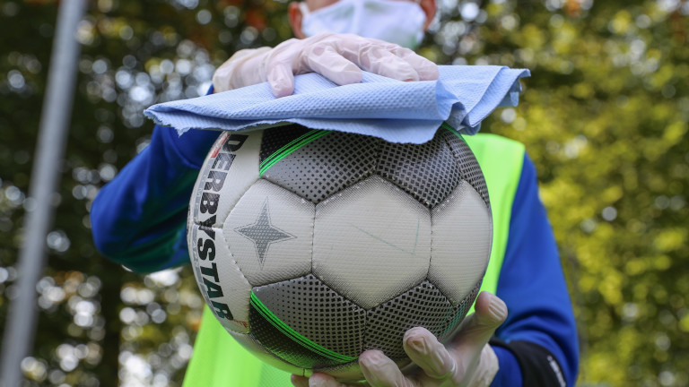

Sport: ultime notizie sportive live e risultati in diretta | Sky Sport
- Home - CUS Catania
Da Taurus Sport puoi trovare le ultime collezioni delle migliori marche di abbigliamento sportivo e attrezzature sportive professionali. Taurus Sport è a Lecco, Erba e Carate Brianza - Scarpe, abbigliamento e attrezzature sportive - Tecnica Sport
ENCI Sport è il sito ufficiale per gli sport dell'ENCI - Ente Nazionale Cinofilia Italiana. Agility dog e obedience. Calendario gare, ultimi risultati e aggiornamenti. - Sky Sport - Wikipedia
CUS Catania è il Centro Universitario Sportivo dell'Ateneo catanese. È stato fondato l'8 luglio 1947. Il gruppo sportivo universitario etneo - Negozio di sport a Torino: abbigliamento, scarpe ...
Anche se l'accezione comune del termine solitamente individua quali sport acquatici solo quelli praticati in piscina (nuoto, nuoto di fondo, nuoto sincronizzato, tuffi, tuffi dalle grandi altezze, pallanuoto e masters, cioè quelli governati dalla FINA), vanno a tutti gli effetti considerati tali anche gli sport remieri (canottaggio, canoa/kayak e canoa fluviale, Dragonboat, Rafting) e quelli ... - Diretta Radio Sport
Centro Sport Palladio Via Cavalieri di Vittorio Veneto, 29 36100 Vicenza VI Tel: 0444-963466 info@centrosportpalladio.it; Contattaci. Accetto il trattamento della privacy (leggi l'informativa) Invia Richiesta × Iscriviti alla newsletter. Centro Sport Palladio ... - HOME | SPORTITALIA
Alle ore 19.00 di lunedì 12 aprile si gioca la partita Chievo-Pisa, gara valevole per … Read More » - Cus Firenze
JOLLY SPORT s.r.l. P. IVA: 06282750014. Via Nizza 51/53, 10125 Torino (TO) Tel: 011 6507553. Fax: 011 6508036. Email: servizio-clienti@jollysport.it - 2T Sport srl | Abbigliamento Sportivo Personalizzato e su ...
Sport Atalanta Foppapedretti Notizie di Bergamo e approfondimenti di cronaca, politica, economia e sport. News Bergamo e provincia in tempo reale. - Sito ufficiale | ENCI Sport
Sport.it è il sito che racconta in diretta i principali eventi sportivi e che raccoglie consigli su prodotti e abbonamenti per chi ama lo sport. Al fine di fornire ai suoi lettori spunti di riflessione utili al loro shopping online sono pubblicati articoli dedicati ai principali sport. - Assindustria Sport | Società Sportiva dilettantistica a ...
SNAPS - OLTRE LO SPORT Hai perso la puntata di SNAPS - OLTRE LO SPORT? Nessun problema, riguarda la puntata integrale nella nostra sezione on demand

Esplora Sky Tg24, Sky Sport, Sky Video News: SKY TG24 Spettacolo METEO OROSCOPO Sport: Sky Sport Superscudetto Ultimo Uomo Video: Sky Video Sky Go Sky.it Format: X Factor Masterchef Home In evidenza: RISULTATI LIVE HIGHLIGHTS SERIE A PAGELLE MASTERS 1000 MONTECARLO calcio Formula 1 Motogp NBA Tutte le sezioni Atletica Basket Bundesliga Calcio calcio Squadre Calcio Femminile Calciomercato Champions League Champions League highlights Ciclismo Coppa America Coppa d Africa Coppa Italia Digital Branded Content Diretta streaming Eredivisie Esports Europa League Europa League highlights Europei Fantacalcio Formula 1 Golf ICC Liga Ligue 1 Live Score Mondiali MotoGP Motori Nations League NBA NBA Highlights Nuoto Olimpiadi Premier League Premier League highlights Pronostici Rugby Scherma Sci Serie A Serie A calendario Serie A classifica Serie A highlights Serie A probabili formazioni Serie A pagelle Serie B Serie C Sky Racing Team VR46 Sport USA Statistiche Superbike Superscudetto Tennis Varie Vela Volley Altro Mappa del sito Archivio Seguici:
da non perdere
per te
risultati
Cosa si nasconde dietro il nervosismo di Ronaldo?
juventusI compagni festeggiano mentre lui sbuffa, la maglia lanciata al raccattapalle che diventa un caso sui social, la rabbia negli spogliatoi. Cosa ha Ronaldo? E, soprattutto, cosa...
12 apr - 14:13Paolo Aghemo
Bonucci guarito dal Covid-19: torna a disposizione di Pirlo
juventus 12 apr - 20:05La Fiorentina spinge su Gattuso: è lui la prima scelta per il futuro
Calciomercato 12 apr - 19:49Ibra avvistato al ristorante, quando il pranzo si fa polemica
la ricostruzione 12 apr - 17:28in primo piano
Vlahovic, Belotti, Malen: 3 nomi per l attacco del Milan
CalciomercatoIl Milan pensa a un nuovo attaccante per la prossima stagione, da affiancare a Zlatan...
12 apr - 13:59Musetti subito fuori, Karatsev vince in due set: 6-3, 6-4
montecarlo 12 apr - 17:27La pioggia cambia il programma: oggi ben 8 italiani su Sky
montecarlo 12 apr - 21:42I numeri da record di Conte: supera Mou e insegue il Trap
interPiù 11 sul Milan, tutte le partite del girone di ritorno vinte (11). Secondo attacco dietro...
12 apr - 15:26Il Sassuolo torna a vincere: Benevento battuto 1-0
highlightsAl Vigorito il Sassuolo vince grazie a un’autorete di Barba propiziata da un bello spunto di Boga...
12 apr - 21:45De Zerbi: "Dobbiamo imparare a essere ingordi"
sassuoloDopo la vittoria contro il Benevento, l'allenatore del Sassuolo rimprovera alla squadra...
12 apr - 23:11Zaniolo torna in campo, si allena con la Primavera
romaIl trequartista proseguirà nelle prossime settimane il lavoro con la formazione di Alberto De...
12 apr - 16:33Osimhen talismano e cuore d oro: che appello sui social
napoliOgni volta che lui segna il Napoli vince. Osimhen vuole trasformare la stagione da incubo in un rush
12 apr - 14:50Papu-gol e il Siviglia batte 4-3 il Celta: -4 dal Barça
LigaSuccede di tutto all’Estadio Balaidos, dove il Papu decide una gara ricca di emozioni. Passano in...
12 apr - 23:30Afroamericano ucciso, Minneapolis protesta e lo sport si ferma
usaSi ferma lo sport professionistico a Minneapolis. Dopo la morte del ventenne afroamericano Daunte...
12 apr - 22:31Dovizioso gira in pista, primo giorno di test con l Aprilia
MotoGpPrima giornata di prove con l'Aprilia per l'ex ducatista, in pista sul circuito di Jerez de la...
12 apr - 14:57Morto Marco Bollesan, leggenda del rugby italiano
LuttoA poche ore di distanza dalla scomparsa di Massimo Cuttitta l'Italia piange Marco...
12 apr - 10:44In Italia 9.789 nuovi casi e 358 decessi
live coronavirusNelle ultime 24 ore in Italia registrati 9.789 nuovi casi di coronavirus su 190.635 tamponi...
12 apr - 08:00SCELTI PER TE
video in evidenza
Share:
NBA
Quale stella ha le migliori spaziature? Non Curry
CLASSIFICAUno studio di BBall Index ha analizzato in quali spaziature possono muoversi le stelle della NBA,...
12 apr - 11:02 18 fotoT Wolves a Seattle e non solo: chi sogna la NBA
LE PRETENDENTILa vendita dei Minnesota Timberwolves per circa 1.5 miliardi di dollari al gruppo di investitori...
12 apr - 10:41La verità di Irving sull’espulsione con Schröder
NBAUn post su Twitter da parte della point guard di Brooklyn sembrerebbe spiegare il motivo dietro...
12 apr - 10:38Dinwiddie accelera: rientro in campo ai playoff?
brooklynL’indiscrezione del New York Daily News ha riacceso il dibattito attorno alla point guard di...
12 apr - 09:45 Vai alla sezioneda non perdere
Sky OriginalTutto sulla serie tv su Totti
novità1997, Fenomeno Ronaldo
i motori su skyLa nuova stagione: 330 gare a 330 all ora
APPROFONDIMENTI
Ogni domenicaAl Club con Caressa e Piccinini
Sky TechIl calcio visto al microscopio
Serie ACovid-19, la situazione squadra per squadra
Messi & c.I giocatori a parametro zero nel 2021
calcio
Inzaghi: "Dato tutto, peccato per il gol preso"
benevento 12 apr - 23:52Covid in Serie A: i casi squadra per squadra
covid 12 apr - 20:00 20 fotoChi ha segnato il 1° gol ai portieri di Serie A?
LO SAPEVI?Debutto nella massima serie per Guglielmo Vicario, vice di Cragno al Cagliari, punito da Darmian...
12 apr - 19:30Kessie e nodo rinnovo, un "presidente" da blindare
milanLo chiamano il Presidente e i suoi numeri lo mettono tra i migliori di sempre del centrocampo...
12 apr - 18:17Champions League, il calendario dei quarti
Champions LeagueTorna la Champions League, due giorni con le gare di ritorno dei quarti di finale: il calendario...
12 apr - 18:00 Vai alla sezioneCalciomercato
Dall Equipe: Messi resta al Barça ma vuole Neymar
Calciomercato 12 apr - 13:08Paratici: "Rinnovo Dybala? Ci vuole cautela..."
JUVENTUS 11 apr - 15:25Costacurta: "Gigio? Non capisco baci alla maglia"
CalciomercatoIl futuro di Donnarumma al Milan è ancora tutto da scrivere in attesa del rinnovo. Costacurta...
10 apr - 21:26Maldini: "Vicini al rinnovo di Ibrahimovic"
CalciomercatoIl direttore tecnico rossonero ha parlato del futuro dello svedese: Siamo assolutamente vicini,...
10 apr - 17:53Giocatori più preziosi, al comando sempre Mbappé
VALORI MERCATONelle ultime settimane il portale specializzato Transfermarkt ha aggiornato le valutazioni di...
09 apr - 21:45 Vai alla sezioneSerie C su Sky
Il calendario di playoff, playout e Supercoppa
serie c 12 apr - 21:36Di Natale è il nuovo allenatore della Carrarese
serie c 11 apr - 20:43Non solo Di Natale, gli ex di A oggi mister in C
serie cCon l'approdo di Antonio Di Natale sulla panchina della Carrarese sono diventati 37 gli...
11 apr - 20:42Serie C, le partite su Sky della 35^ giornata
pay-per-viewTra sabato 10 e domenica 11 aprile, saranno 12 i match della 35^giornata di Campionato...
09 apr - 14:52Amarcord Ternana: i big più celebri del passato
serie cI rossoverdi festeggiano con largo anticipo la promozione in Serie B e sognano ora di rifare il...
04 apr - 12:07 Vai alla sezioneFormula 1
Formula Talk, Motor Valley tra presente e futuro
streaming 12 apr - 18:26Arriva Imola, nuovo duello Hamilton-Verstappen
Formula 1 12 apr - 08:00Storia, numeri e record: questa è Imola. FOTO
F1Secondo Gran Premio dell'Emilia Romagna dopo l'edizione del 2020, quando Imola rientrò nel...
12 apr - 08:00Perez verso Imola: l allenamento estremo. VIDEO
Formula 1Sui social il pilota messicano della Red Bull ha mostrato gli allenamenti in vista del prossimo...
11 apr - 16:11Leclerc e Sainz si allenano... giocando a padel
Formula 1Anche Charles Leclerc e Carlos Sainz non fanno eccezione: i due piloti della Ferrari sono stati...
10 apr - 12:46 Vai alla sezioneMotoGP
Marquez torna a Portimao, esclusi ulteriori test
MotoGp 12 apr - 15:38Bradl: "Marquez subito sul podio? Non mi stupirei"
MotoGp 12 apr - 13:00GP Portimao, MV Agusta chiama Pons
Moto2MV Agusta Forward Racing ha deciso di puntare sullo spagnolo Miquel Pons per sostituire Tommaso...
12 apr - 11:51Marquez sta tornando, quanti messaggi per lui
MotoGpDal Motomondiale, ma anche dalla Superbike e dalla Formula 1: tutto il Motorsport (e non solo)...
11 apr - 13:41Morbidelli: "Avvio difficile, ma c è fiducia"
MotoGpMorbido e le sue sensazioni dopo le prime due gare della stagione della Petronas Yamaha in Qatar:...
11 apr - 08:00 Vai alla sezioneFormula E
E-Prix Roma, riscatto Vandoorne: sua Gara-2
FORMULA E 11 apr - 14:00Formula E, E-Prix Roma: Vergne vince Gara-1
FORMULA E 10 apr - 16:57Vandoorne in pole a Roma, la gara al via alle 16
formula eStoffel Vandorne ha conquistato la pole position dell'E-Prix di Roma, terzo Round del Mondiale di...
10 apr - 13:12La Formula E a Roma: le regole e le classifiche
FORMULA EOggi e domenica sul circuito cittadino dell’Eur la Formula E fa tappa a Roma. Due gare per...
10 apr - 08:00Formula E a Roma, alla scoperta del circuito
FORMULA EIl Mondiale elettrico torna in Italia. A Roma si corre sabato e domenica su un circuito cittadino...
08 apr - 17:27 Vai alla sezioneTENNIS
Tennis, i 70 titoli ATP vinti dagli italiani
Tennis 12 apr - 15:40 26 fotoQuattro azzurri in Top 30: non accadeva dal 1977
Tennis 12 apr - 14:17 25 fotoNon solo Finals: a Torino anche la Davis 2021
TennisAltro grande colpo per il tennis azzurro: la ITF ha ufficializzato che Torino ospiterà le finali...
12 apr - 12:07Montecarlo è azzurra: nove italiani in tabellone
TennisDopo la domenica storica per il tennis italiano a Montecarlo (Caruso, Travaglia, Cecchinato e...
12 apr - 08:00Sonego vince a Cagliari, battuto Djere in rimonta
sardegna openLorenzo Sonego conquista il Sardegna Open: battuto in finale il campione in carica serbo, Laslo...
11 apr - 12:30 Vai alla sezioneGOLF
Masters, vittoria storica di Matsuyama
Golf 12 apr - 08:35Masters, altra "hole in one": il colpo di Conners
Golf 11 apr - 09:28Augusta Masters: in testa il giapponese Matsuyama
GolfAl termine del terzo giro dell'Augusta Masters, dopo continui colpi di scena, c'è un nuovo leader...
11 apr - 07:39Augusta Masters: Rose leader, Molinari passa
GolfConferme e sorprese nella seconda giornata del Masters di Augusta. L'inglese Justin Rose resta al...
10 apr - 08:00Masters, la strepitosa "hole-in-one" di Fleetwood
GolfAzione spettacolare nella prima giornata del Masters di Augusta, torneo trasmesso da Sky Sport....
09 apr - 14:05 Vai alla sezioneOlimpiadi
Giochi, previsto un hotel per atleti asintomatici
Olimpiadi 11 apr - 09:47Sollevamento pesi, la Nazionale azzurra al Coni
Olimpiadi 09 apr - 19:52Osaka, annullata staffetta della torcia olimpica
tokyo 2020La risalita dei contagi ha portato il governatore Hirofumi Yoshimura a vietare il passaggio della...
07 apr - 12:39Corea del Nord, niente Giochi per rischio Covid
OlimpiadiLa Corea del Nord non prenderà parte alle Olimpiadi di Tokyo in programma la prossima estate. Il...
06 apr - 10:44Dalla leucemia all Olimpiade, la rinascita di Ikee
OlimpiadiEra stata costretta a trascorrere 10 mesi in ospedale dopo aver scoperto di essere malata di...
04 apr - 13:03 VAI ALLA SEZIONECiclismo
Giro, un mese al via: l Italia s illumina di rosa
CICLISMO 09 apr - 17:07 40 fotoFedorov-Vergaerde fanno a spallate: squalificati!
FIANDRE 2021 04 apr - 17:34Van del Poel, la bellezza dell’imperfezione
DiFrancesco Pierantozzi
Asgreen vince il Fiandre, ma che caos in partenza!
CiclismoIl danese della Deceuninck-Quick Step vince in volata il Ronde van Vlaanderen davanti al super...
04 apr - 13:00Eterno Valverde, a quasi 41 anni vince Gp Indurain
CiclismoLo spagnolo, che compirà 41 anni il prossimo 25 aprile, ha conquistato il Gp Miguel Indurain con...
03 apr - 20:43 Vai alla sezioneBasket
Brindisi batte Milano 80-71: è la nuova capolista
SERIE A BASKET 11 apr - 23:42Virtus ko in Gara-2 con Kazan: mercoledì la bella
eurocup 10 apr - 13:07L Olimpia batte l Efes, c è il Bayern ai playoff
EurolegaNell'ultima giornata della stagione regolare in Europa, la squadra di coach Ettore Messina supera...
09 apr - 22:40Gasol, rieccolo col Barça 20 anni dopo. FOTO
EurolegaVenti anni dopo aver lasciato il Barcellona per scrivere la sua storia vincente nella NBA, il...
09 apr - 22:16Eurocup, Virtus vince gara 1 semifinale: Kazan ko
eurocupCon un Teodosic stellare i bianconeri hanno nelle mani il match point per la finale che potrebbe...
07 apr - 16:58 Vai alla sezioneNUOTO-PALLANUOTO
Pellegrini, coach Giunta: "Parola chiave serenità"
olimpiadi 06 apr - 14:59Paltrinieri, miglior crono stagionale nei 1500
assoluti nuoto 03 apr - 19:13Pellegrini si qualifica alla sua 5^ Olimpiade
NuotoFederica Pellegrini ha conquistato il pass per i Giochi di Tokyo (la sua 5^ Olimpiade)...
02 apr - 18:23Martinenghi show, record italiano nei 100 rana
assolutiNiccolò Martinenghi nuota i 100 rana in 58 37, tempo da medaglia olimpica che rappresenta il...
01 apr - 19:18Panziera record, pass olimpico per Sara Franceschi
assolutiNella prima giornata di gare degli Assoluti di Nuoto di Riccione brilla la stella di Margherita...
31 mar - 18:11 Vai alla sezioneALTRI SPORT
Addio Mouse Cuttitta, gran giocatore ed esempio
Rugby 11 apr - 22:04Covid, morto a 54 anni ex pilone azzurro Cuttitta
Rugby 11 apr - 21:20Siena, la maratona donne più veloce in Italia
AtleticaAll’aeroporto di Siena Ampugnano 2h20:08 per la keniana Tanui, miglior tempo di sempre in una...
11 apr - 13:12Il Super Rugby neozelandese e australiano su Sky
guida tvTra il 9 e l’11 aprile doppio “Super Rugby”, in campo e su Sky Sport quello neozelandese e...
09 apr - 08:00Golden Gala 2021 approda a Firenze il 4 giugno
AtleticaArriva a Firenze l'edizione numero 41 del Golden Gala Pietro Mennea . La manifestazione si terrà...
08 apr - 20:37 Vai alla sezioneWrestling
Mike Tyson scatenato sul ring di AEW Dynamite
wrestling 09 apr - 19:25AEW, Mike Tyson torna sul ring a Dynamite
wrestling 07 apr - 12:32AEW: Young Bucks e Jon Moxley, la strana alleanza
wrestlingDopo mesi di incomprensioni con Kenny Omega, i fratelli Jackson decidono di schierarsi al fianco...
06 apr - 14:16Christian Cage, il Capitano debutta in AEW
wrestlingIl celebre wrestler canadese farà il suo esordio ufficiale su un ring AEW nel prossimo episodio...
30 mar - 19:37Thunder e Britt: le donne AEW si prendono la scena
wrestlingNello storico main event di St. Patrick’s Day Slam, Thunder Rosa e Britt Baker danno spettacolo,...
23 mar - 14:17 VAI ALLA SEZIONE I siti Sky: sky sport sky tg24 sky video sky arte Servizi: sky tv sky apps NowTv sky bar spazi sky Note legali: cookie e policy security e privacy note legali Offerta Sky Media corporate accedi a sky goPer il consumatore clicca qui per i Moduli, Condizioni contrattuali, Privacy & Cookies , informazioni sulle modifiche contrattuali o per trasparenza tariffaria , assistenza e contatti . Tutti i marchi Sky e i diritti di proprietà intellettuale in essi contenuti, sono di proprietà di Sky international AG e sono utilizzati su licenza. Copyright 2021 Sky Italia - P.IVA 04619241005. Segnalazione Abusi
Arriva sempre primo
Ricevi live da SkySport le breaking news sui principali eventi sportivi. Per accettare le notifiche devi dare il consenso nel successivo popup.
non ora accettaRicevi le notifiche
tutte Calcio Formula 1 MotoGP Basket e NBA Tennis Altri sport conferma disiscrivitiSei sicuro di non volere ricevere più le notifiche?
no siTi sei disiscritto correttamente!
Fai login per ottenere il meglio subito
Accedi con il tuo Sky ID o registrati in pochi istanti.
forse dopo accedi
Mauris vulputate dolor
Rutrum fermentum nibh in augue praesent urna congue rutrum.
Etiam posuere